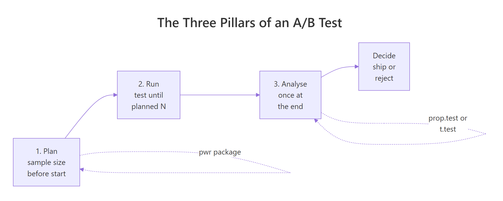
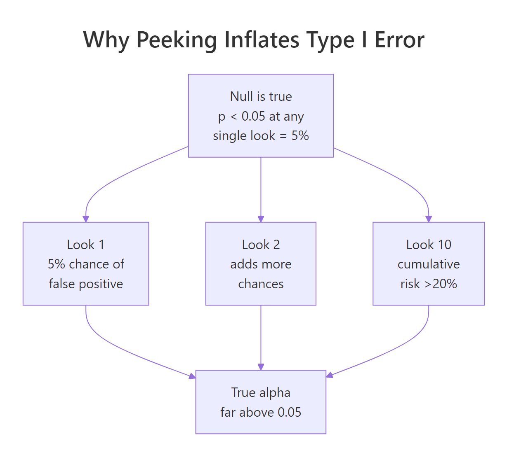
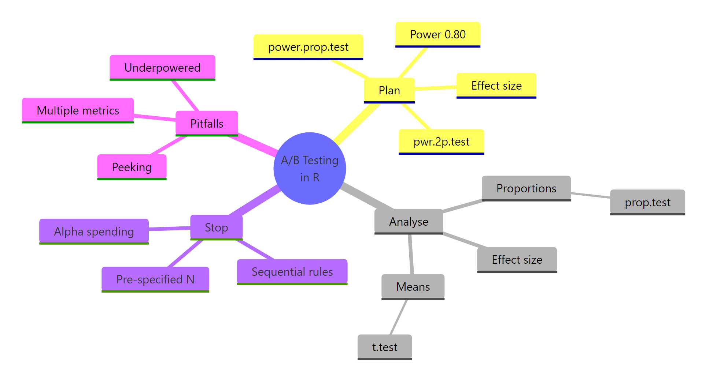

A/B Testing in R: Plan Your Sample Size, Analyse Correctly, and Know When to Stop
A/B testing in R is a design discipline with three moves: pick a sample size with pwr before the test runs, analyse the result exactly once with prop.test() or t.test(), and stop on a pre-specified rule instead of whenever the p-value looks favourable. Do those three things and the rest is bookkeeping.
What does an A/B test in R actually look like?
Before the jargon, let's see the whole pattern in one example. Suppose we ran a test where a new checkout converted 130 out of 2000 visitors and the old one 105 out of 2000. We want a single, honest answer: did the new checkout actually win? The code below does the whole job in one call, it computes the p-value, the confidence interval for the lift, and a sanity check on the effect size.
Three numbers tell the whole story. The conversion rates were 6.5% vs 5.25%, a lift of 1.25 percentage points. The p-value is 0.08, which is above the usual 0.05 threshold, so we cannot reject "the two checkouts perform equally". The 95% confidence interval for the lift is roughly -0.2 to 2.7 percentage points, meaning the data are consistent with anything from a small loss to a meaningful win. Calling this a winner would be premature.

Figure 1: The three pillars of an A/B test: plan sample size, run to the planned N, analyse once at the end.
Try it: Using the same prop.test() pattern, run the test with only 500 visitors per arm (so 33 conversions in the new group and 26 in the old). The point estimate of the lift barely moves but the confidence interval should widen noticeably. Confirm that.
Click to reveal solution
Explanation: With 4x fewer visitors the point estimates barely change, but the CI widens by roughly 2x. Sample size controls precision, not effect.
How do you pick a sample size before the test?
The sample size question has four knobs: the baseline rate $p_1$, the minimum effect you care about ($p_2 - p_1$), the significance level $\alpha$ (usually 0.05), and the power $1 - \beta$ (usually 0.80). Fix any three and R will solve for the fourth. For sample size, you fix $p_1$, $p_2$, $\alpha$, and $1 - \beta$, and leave $n$ blank.
R has two common ways to do this, and they give slightly different answers because they use different approximations. Let's run both on the same problem: baseline 5% conversion, we want to detect a lift to 6%, at 80% power.
So base R tells us we need roughly 8,836 visitors per arm, about 17,700 total. Now compare with the pwr package, which uses Cohen's arcsine-transformed effect size $h$ instead of the raw difference. The arcsine transform stretches the scale near 0 and 1, which matters when proportions are small.
$$h = 2 \cdot \arcsin(\sqrt{p_1}) - 2 \cdot \arcsin(\sqrt{p_2})$$
Where:
- $p_1, p_2$ = the two conversion rates
- $h$ = a standardised effect size with known power tables
If you're not interested in the math, the takeaway is that ES.h() computes $h$ for you.
The two answers disagree by about 8%: 8,193 per arm with pwr.2p.test() vs 8,836 per arm with power.prop.test(). The difference comes from the arcsine transformation and from whether a continuity correction is built in. For planning, either is fine. Pick one and use it consistently. The important number is the order of magnitude: you need roughly 8,000 to 9,000 visitors per arm, not 2,000.
Try it: A signup page converts at 4% and you want to detect a lift to 4.5% with 80% power at $\alpha = 0.05$. Compute the per-arm sample size using pwr.2p.test(). You should land around 13,000.
Click to reveal solution
Explanation: Small absolute differences at small baseline rates require enormous samples because the standard error shrinks slower than the effect.
How do you analyse a proportion A/B test correctly?
Once the test is over and the data is in, there is one question: given the final counts, is the lift real? For proportions (conversion, click-through, signup, churn flag), the right tool is prop.test(). Under the hood it is a Pearson chi-square test on a 2x2 contingency table, but it reports something more useful: the confidence interval for the difference in proportions, which is the lift itself.
Let's reuse the success and trials vectors from block 1 and pull out the pieces analysts actually cite in a report.
The three numbers, reported together, tell a complete story. The lift point estimate is 1.25 percentage points. The 95% CI is (-0.15pp, 2.65pp), which just barely crosses zero, and that is exactly why the p-value (0.08) does not clear 0.05. Reporting the lift and its CI is more informative than reporting the p-value alone, because the CI tells the reader the range of plausible lifts, not just whether we rejected the null.
chisq.test() and prop.test() give the same p-value on a 2x2 table. Use prop.test() for A/B tests because it reports the lift CI. Use chisq.test() when the table is larger than 2x2 (for example, a three-arm A/B/C test compared to control). Set correct = FALSE to match the formula in most textbooks; the default correct = TRUE applies Yates's continuity correction and is slightly more conservative.Try it: Suppose the final counts are 48/1000 in control and 60/1000 in treatment. Run prop.test() and decide: does the 95% CI cross zero? Is the p-value below 0.05?
Click to reveal solution
Explanation: The CI spans -0.7pp to +3.1pp, so zero is inside the range of plausible lifts. Reporting "lift = 1.2pp, p = 0.22" captures this honestly; reporting "lift = 1.2pp, p < 0.05" would be false.
How do you analyse a continuous-metric A/B test?
Not every A/B metric is a proportion. Revenue per user, time on site, pages viewed, and API latency are all continuous, and proportions tests do not apply. The default tool is Welch's two-sample t-test, which does not assume equal variances between arms, a property you want because revenue distributions are always more variable in one arm than the other.
Let's simulate two revenue streams and compare them. We draw from log-normal distributions because real revenue is heavy-tailed, not normal.
The new page raised revenue per user from $19.53 to $21.77, a lift of $2.24 per user with a 95% CI of ($1.28, $3.20). The p-value is tiny and Cohen's d is 0.17, which in Cohen's conventions is a "small" effect, but small does not mean unimportant. A 0.17 standardised effect on a large revenue stream is often the difference between a profitable quarter and a flat one.
wilcox.test() as a non-parametric sanity check, or (3) model on log(revenue + 1) and compare geometric means.Try it: Two arms have means 45.0 and 47.5, standard deviations 12.0 and 12.5, and 800 users each. Compute Cohen's d for this effect.
Click to reveal solution
Explanation: Cohen's d is the raw mean difference divided by the pooled standard deviation. It is unit-free, which is why you compare it across experiments regardless of metric.
What happens if you peek at the p-value every day?
Here is the mistake that ruins more A/B tests than any other: running the test, checking the p-value every day, and stopping the moment it drops below 0.05. This sounds harmless. It is not. Each extra look is another chance for random noise to cross the threshold, and the effective false-positive rate climbs fast.
The cleanest way to see this is a simulation. We will assume the null is true (both arms converge to the same rate), run the same experiment 5,000 times, peek at it 10 times per run, and count how often any peek crossed $\alpha = 0.05$.
Under the null, 10 peeks turn a nominal 5% false-positive rate into roughly 22%. One in five "wins" declared by a peeking analyst is pure noise. This is the peeking problem, and it does not go away by adding a "just checking" disclaimer. The test is broken.

Figure 2: Each extra peek at the data adds a chance for a false positive; cumulative alpha climbs far above 0.05.
Try it: Predict what happens with 5 peeks instead of 10. Re-run the simulation with look_points <- seq(400, 2000, by = 400) and see whether peek_alpha falls closer to 0.05 or stays well above.
Click to reveal solution
Explanation: Cutting from 10 peeks to 5 brings the inflated alpha down, but not to 0.05. Any peeking without correction inflates the false-positive rate.
How do you stop early without inflating error?
If peeking is forbidden, can you ever stop a test early when results look great? Yes, if you plan the peeks in advance and widen the rejection threshold at each look so the total false-positive rate across all looks stays at 0.05. This is called group-sequential testing, and the simplest version uses Pocock boundaries: the same rejection threshold at every look, chosen so the total alpha is preserved.
We compute Pocock boundaries by simulation, because there is no closed form. The idea: find a threshold $z^$ such that, under the null, the probability of any look exceeding $z^$ is exactly 0.05.
The simulation finds that with 5 equally spaced looks, you need a z-statistic of roughly 2.42 (not the usual 1.96) at any look to claim a win. This is more conservative per look, but the reward is that you get five chances. The total alpha across all looks stays at 0.05.
Let's verify the rule preserves the false-positive rate under the null by simulating once more with the chosen boundary.
The empirical false-positive rate is 0.047, comfortably within sampling error of the nominal 0.05. Compare this with the 22% from uncontrolled peeking earlier. Same five looks, correct boundary: the test actually does what a 5% test is supposed to do.
gsDesign or rpact in local R. They implement O'Brien-Fleming, Pocock, and custom alpha-spending functions with exact (non-simulated) boundaries, futility rules, and adjusted sample-size recalculations. The base-R rule above is a minimum viable version for learning; gsDesign::gsDesign(k = 5, alpha = 0.025, test.type = 2, sfu = "Pocock") is what you ship.Try it: What happens if you use the naive $z = 1.96$ threshold at each of 5 looks instead of the Pocock-adjusted 2.42? Based on the peeking simulation earlier, predict whether empirical alpha will be near 0.05 or far above, then run the check.
Click to reveal solution
Explanation: The naive threshold gives ~14% alpha. The Pocock adjustment to 2.42 is the price you pay for the right to peek five times.
Practice Exercises
Exercise 1: Reconcile two sample-size calculations
You plan a test with baseline conversion 10%, minimum detectable lift of 1.5 percentage points (so treatment at 11.5%), $\alpha = 0.05$, and 80% power. Compute per-arm sample size two ways: using power.prop.test() (base R) and using pwr.2p.test() with ES.h(). They will differ by a few percent. Save them to my_n_base and my_n_pwr and comment on why the two answers differ.
Click to reveal solution
Explanation: power.prop.test() uses a normal approximation on the raw difference; pwr.2p.test() uses Cohen's arcsine-transformed $h$. They converge as the sample grows but differ measurably at small effect sizes. Either is fine in practice, pick one and use it consistently.
Exercise 2: Three-look sequential trial under the null
Simulate a 3-look sequential A/B test using the same Pocock-style approach. Use 15,000 total visitors per arm split into 3 equal looks, $\alpha = 0.05$, both arms at 5% true rate (null is true). Find a threshold that keeps empirical alpha at or below 0.05 and store it in my_seq_result.
Click to reveal solution
Explanation: Fewer looks require a smaller adjustment. With 3 looks the boundary settles around 2.30; with 5 looks it was ~2.42. The logic is identical: find the threshold that makes the union of rejection events across all looks add up to 5%.
Complete Example
Putting the three pillars together in one workflow. Scenario: a checkout redesign. Baseline conversion is 12%, we want to detect a lift of at least 2 percentage points (to 14%) with 80% power at $\alpha = 0.05$. We plan once, simulate the run, analyse once, and decide.
Every step was decided in advance. The sample size (4,544 per arm) was locked before any data arrived, the test is a single call at the planned N, and the decision rule (p < 0.05) was in the plan document. No peeking, no redefining the metric mid-test, no extending the run because the numbers looked close. That is what makes the p-value mean what it claims to mean.
Summary

Figure 3: Overview of the moving parts in an A/B test: plan, analyse, stop, pitfalls.
| Pillar | R function | Main pitfall |
|---|---|---|
| Plan sample size | pwr::pwr.2p.test() or power.prop.test() |
Under-powered tests that cannot see the effect you care about |
| Analyse proportions | prop.test(correct = FALSE) |
Reporting p-value without the lift CI |
| Analyse continuous metrics | t.test(var.equal = FALSE) |
Ignoring heavy tails in revenue data |
| Stop the test | Pre-specified N, or group-sequential boundaries | Peeking, which can triple or quadruple your false-positive rate |
Three rules protect you from most real-world mistakes. Pre-specify everything before the test starts. Report lift and CI, not just p. If you want to peek, plan the peeks and widen the boundary.
References
- Champely, S. pwr: Basic Functions for Power Analysis, CRAN vignette. Link
- Miller, E. Simple Sequential A/B Testing. Link
- Kohavi, R., Tang, D., Xu, Y. Trustworthy Online Controlled Experiments (Cambridge University Press, 2020).
- R Core Team.
stats::prop.testdocumentation. Link - Anderson, K. A gentle introduction to group sequential design, gsDesign vignette. Link
- Lan, K. K. G., DeMets, D. L. (1983). Discrete sequential boundaries for clinical trials. Biometrika, 70(3), 659-663.
- Deng, A., Lu, J., Chen, S. (2016). Continuous monitoring of A/B tests without pain: Optional stopping in Bayesian testing. PDF
- Robbins, H. (1970). Statistical methods related to the law of the iterated logarithm. Annals of Mathematical Statistics, 41(5), 1397-1409.
- Larsen, N. et al. (2023). Statistical Challenges in Online Controlled Experiments: A Review of A/B Testing Methodology. Link
Continue Learning
- Statistical Power Analysis in R: deeper dive on the four knobs of power analysis (effect size, alpha, power, N) and how they trade off.
- Sample Size Planning in R: planning sample size for designs beyond the 2-proportion case, including t-tests, ANOVA, and regression.
- Multiple Testing Correction in R: what to do when your A/B test has more than one success metric (because they compound the same way peeking does).